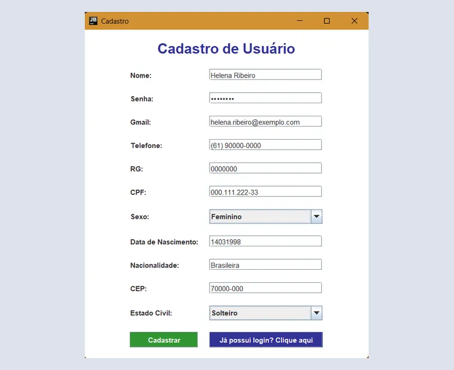
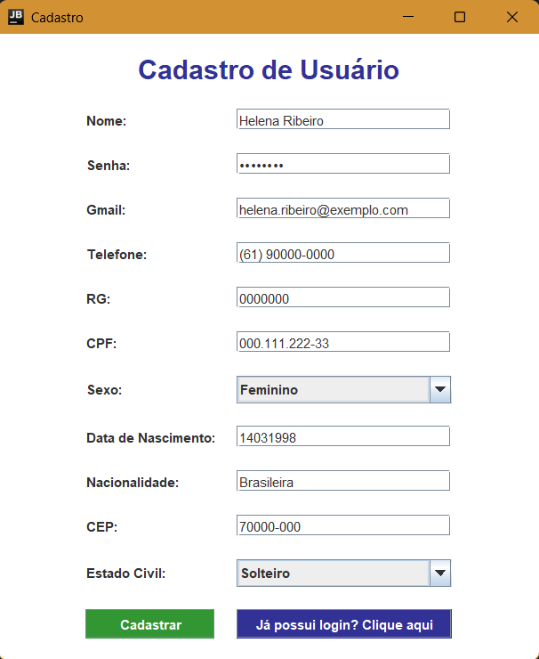
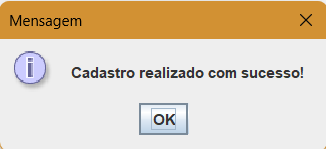
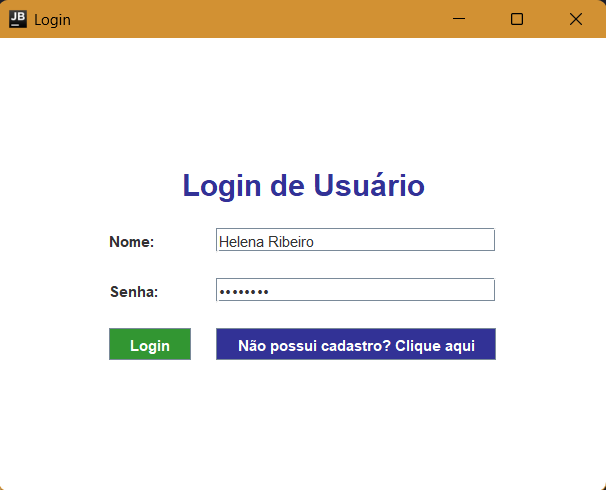
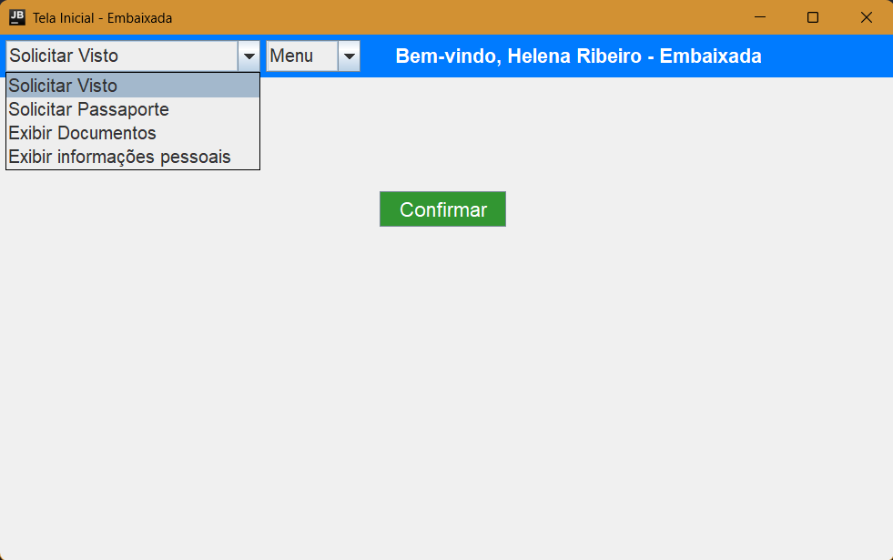
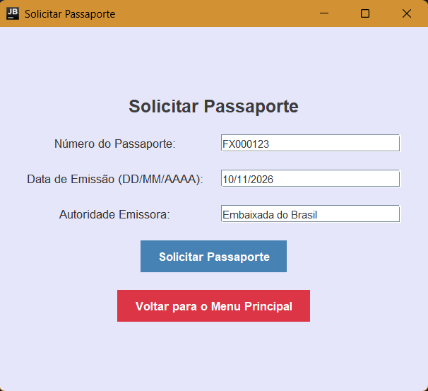
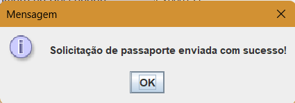
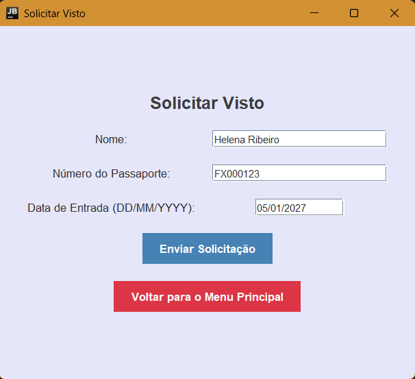
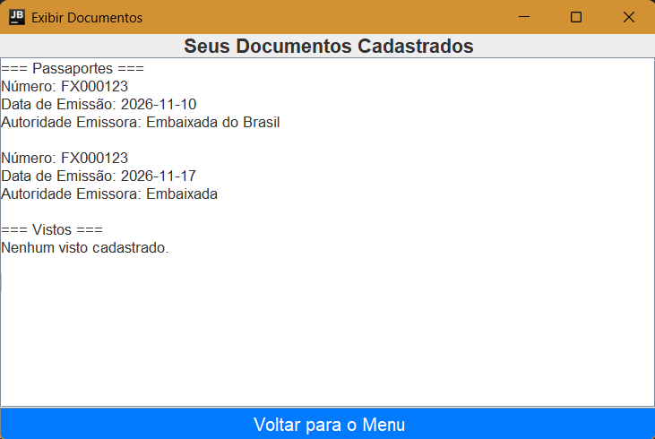
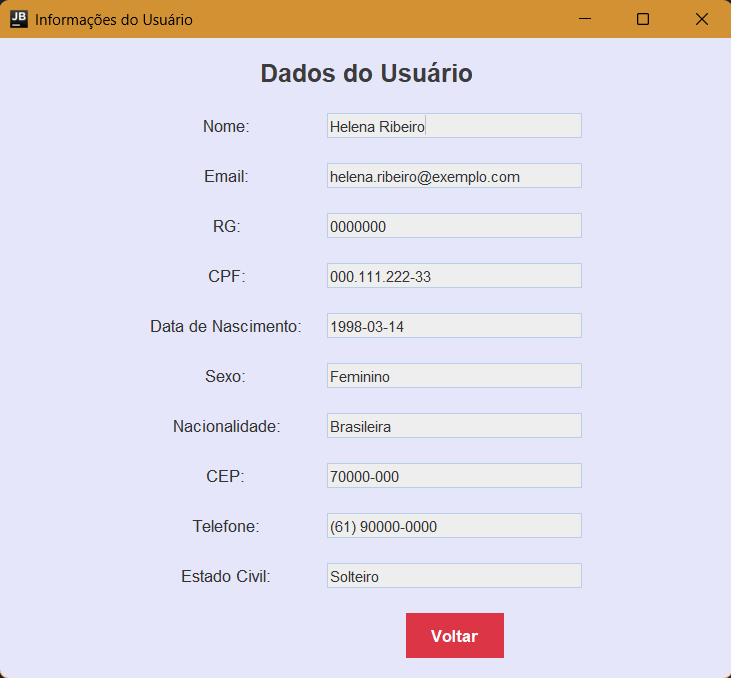

Como executar
- Suba o banco com o Docker, a partir do repositório:
git clone https://github.com/oliveirahipx/embaixada-desktop.git cd embaixada-desktop docker compose up -d
Isso cria um MySQL 8.4 na porta 3306 com o bancoembaixadaBrasil(usuário e senhaembaixada) e roda obdEmbaixada.sql. - Baixe o
embaixada-desktop-1.0.0.jarpelo botão acima e rode:java -jar embaixada-desktop-1.0.0.jar
- Na tela de login, clique em Não possui cadastro? Clique aqui, crie um usuário e entre com o nome e a senha.
Se a porta 3306 já estiver ocupada, use outra: MYSQL_PORT=3307 docker compose up -d e aponte o programa com EMBAIXADA_DB_URL=jdbc:mysql://localhost:3307/embaixadaBrasil. Sem banco acessível, o programa avisa qual endereço tentou usar.
Passo a passo
Capturas do jar da versão 1.0.0 rodando no Windows, ligado ao MySQL do docker-compose, com uma pessoa fictícia.

-

Cadastro com os dados pessoais. A data de nascimento entra como DDMMAAAA e é convertida para o tipo DATE do MySQL. -

O registro é gravado na tabela usuario. -

Login por nome de usuário e senha, com consulta parametrizada (PreparedStatement). -

Tela inicial com a saudação e as opções: visto, passaporte, documentos e dados pessoais. O segundo menu tem logout e suporte. -

Pedido de passaporte: número, data de emissão (validada como DD/MM/AAAA) e autoridade emissora. -

O pedido fica ligado ao usuário logado pela chave estrangeira idusuario. -

Pedido de visto com nome, passaporte e data de entrada. -

Documentos do usuário. O pedido de visto aparece como passaporte com autoridade "Embaixada": é uma limitação conhecida, registrada no README. -

Dados pessoais lidos do banco, em campos somente leitura.